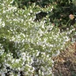

Oil Grimoire

Winter Savory Essential OilPregnancy
Type
Scent
Notes/Warnings
Should not be used on the skin at all. Not for home aromatherapy use. Avoid during pregnancy.
Drug Interactions
Like summer savory, high in carvacrol and thymol — severe dermal and mucous membrane irritant. Anticoagulant activity — caution with anticoagulant and antiplatelet drugs. Hypoglycemic effect — caution with diabetes medication. Caution with major surgery, peptic ulcer, and hemophilia. Tisserand & Young dermal max 1.2%.
Extraction Method
Chemical Family
Plant1
Winter Savory Essential Oil is steam distilled from the whole herb of Winter Savory. It is not for home aromatherapy use. An oleoresin is also produced by solvent extraction.
Extraction & Characteristics
Source: Whole herb of Satureja montana.
Method: Steam distillation. An oleoresin is also produced by solvent extraction.
Appearance: Colourless or pale yellow liquid.
Scent: Sharp, medicinal, herbaceous.
Principal constituents: Mainly carvacrol, cymene, and thymol, with lesser amounts of pinenes, limonene, cineol, borneol, and terpineol.
Where You Will Encounter It
Occasionally used in perfumery work. The oil and oleoresin are employed to some extent in flavouring, mainly meats and seasonings.